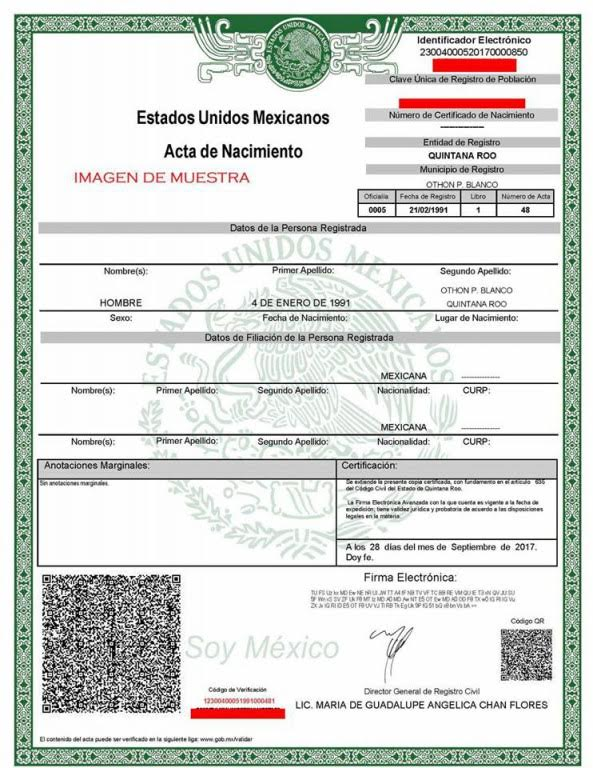
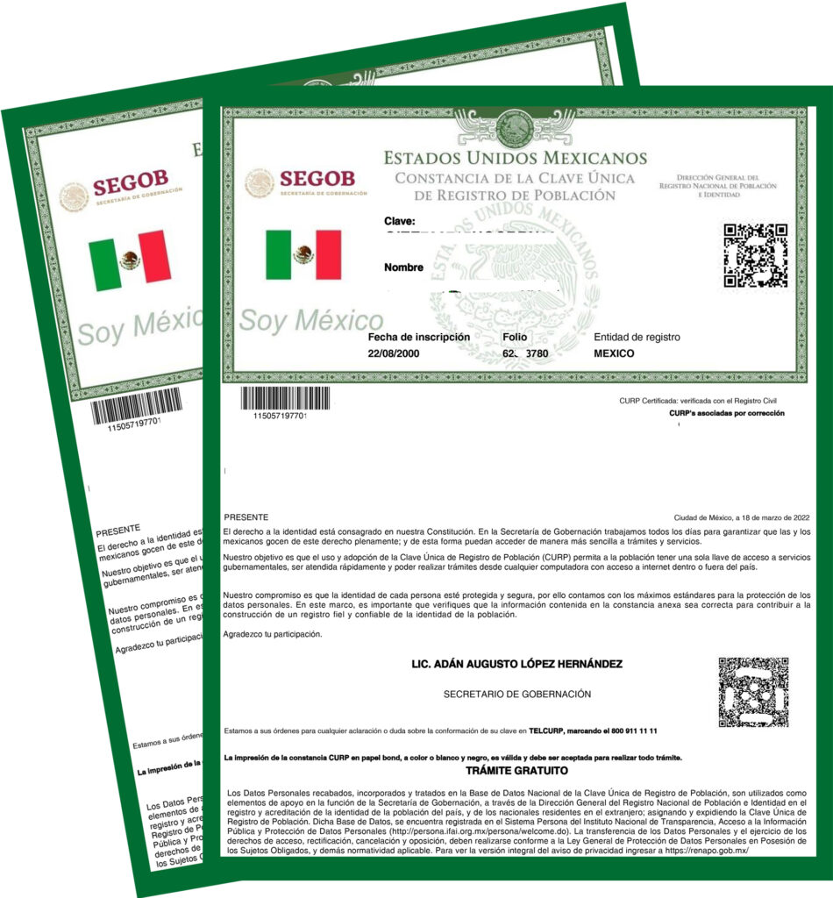
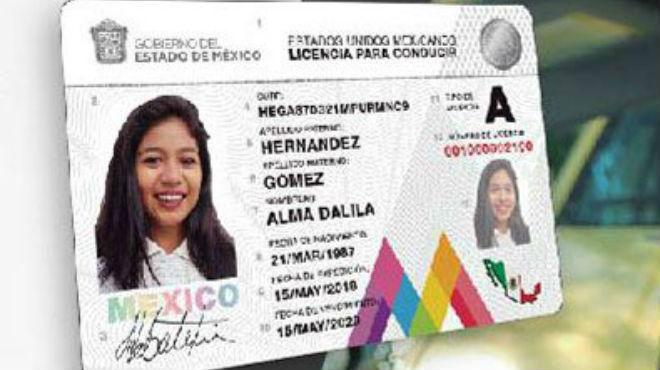
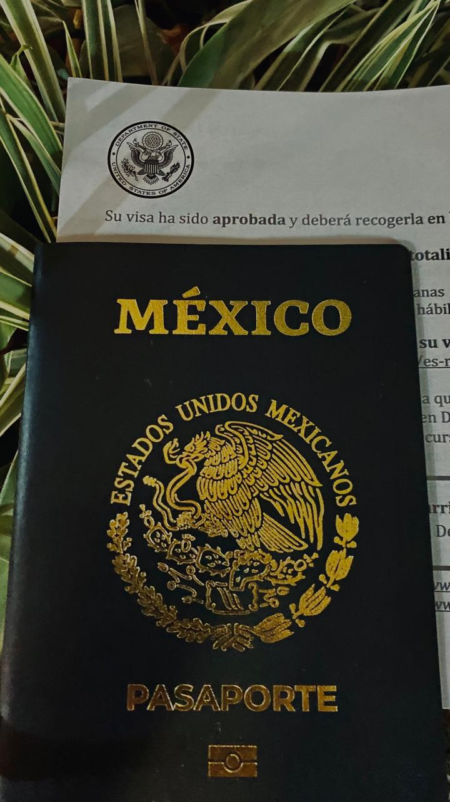

Solicitudes Disponibles
Encuentra aquí los requisitos, pasos y documentos necesarios para solicitar trámites como actas, CURP, licencias, pasaporte, RFC, certificados y más.
Video Explicativo
Solicitud de Acta de Nacimiento

Requisitos
- CURP o datos personales completos
- Nombre de padre o madre
- Lugar y fecha de nacimiento
- Pago correspondiente (si aplica)
Pasos
- Ingresa al sitio oficial o acude al registro civil.
- Proporciona tu CURP o datos personales.
- Realiza el pago correspondiente.
- Descarga o recoge tu acta certificada.
Solicitud de CURP

Requisitos
- Acta de nacimiento
- Identificación oficial
Pasos
- Ingresa al portal de CURP o acude al módulo más cercano.
- Proporciona tu acta de nacimiento e identificación.
- Confirma tus datos personales.
- Descarga o solicita tu formato CURP.
Solicitud de Licencia de Conducir

Requisitos
- Identificación oficial
- Comprobante de domicilio
- CURP
- Examen médico (si aplica)
- Pago correspondiente
Pasos
- Agenda tu cita en el portal de movilidad.
- Acude el día indicado con tus documentos.
- Realiza el pago.
- Entregan tu licencia impresa.
Solicitud de RFC (SAT)
Requisitos
- CURP
- Identificación oficial
- Comprobante de domicilio (si aplica)
- Correo electrónico activo
Pasos
- Ingresa al portal del SAT y selecciona “Inscripción al RFC”.
- Llena tus datos personales.
- Agenda cita si lo solicita el sistema.
- Obtén tu RFC y constancia de situación fiscal.
Solicitudes del Registro Civil
Requisitos
- Identificación oficial
- CURP
- Datos del acta que deseas solicitar
Pasos
- Selecciona el tipo de acta (matrimonio, nacimiento, defunción, etc.).
- Proporciona los datos completos.
- Realiza el pago correspondiente.
- Descarga o recoge tu documento.
Solicitud de Pasaporte

Requisitos
- Identificación oficial
- Acta de nacimiento
- CURP
- Comprobante de pago
- Cita confirmada
Pasos
- Solicita una cita en el portal de la SRE.
- Realiza el pago.
- Acude con tus documentos.
- Te toman foto y huellas.
- Recibes tu pasaporte.